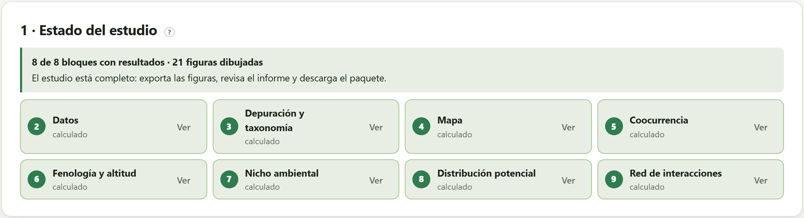
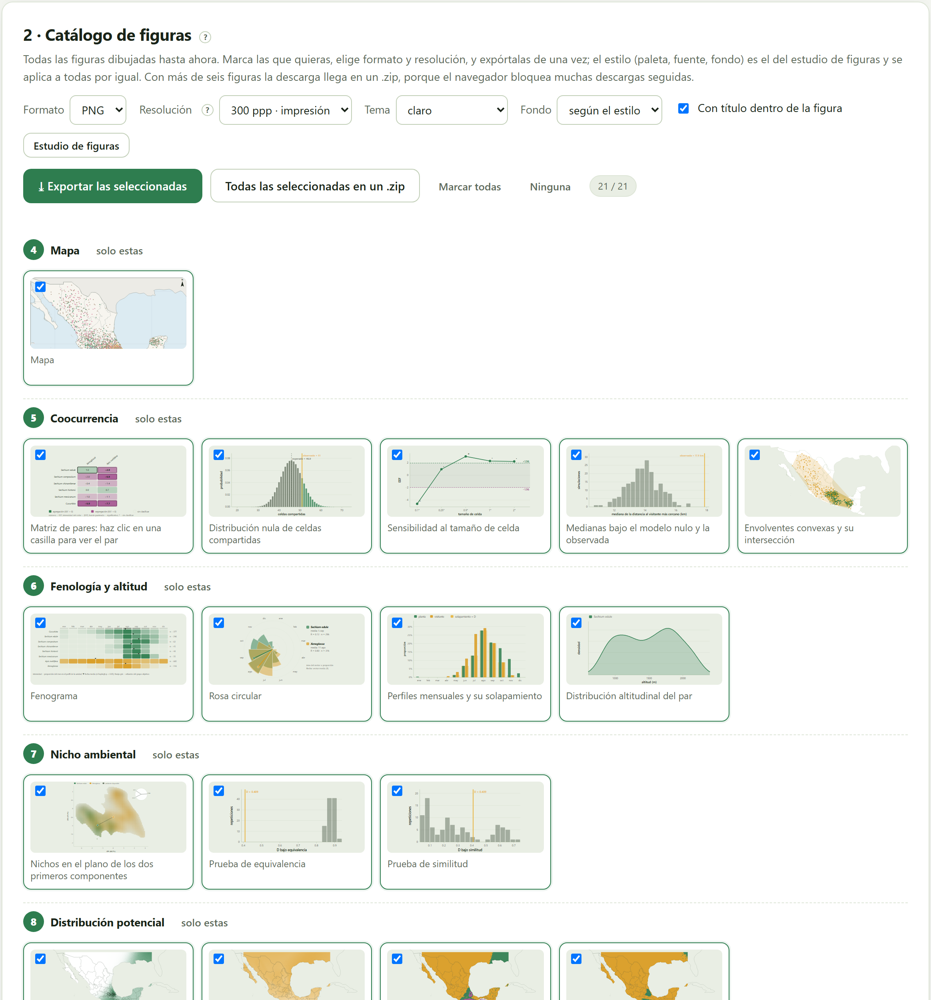
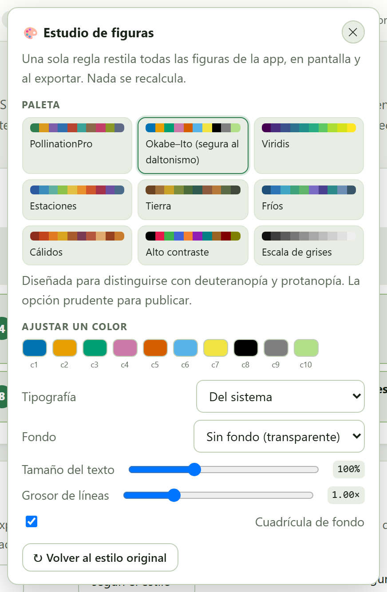
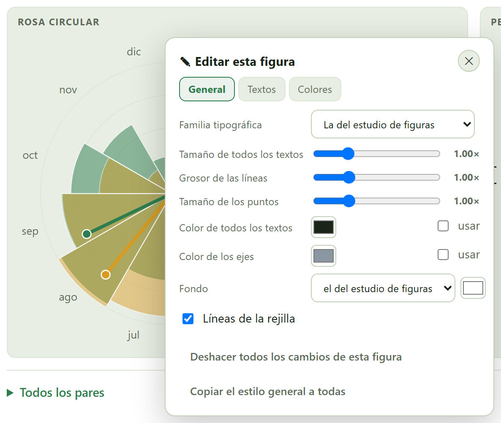
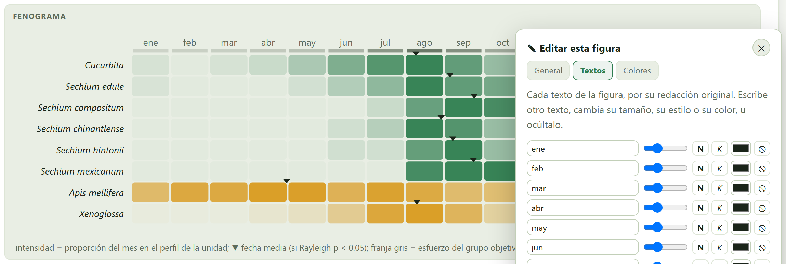
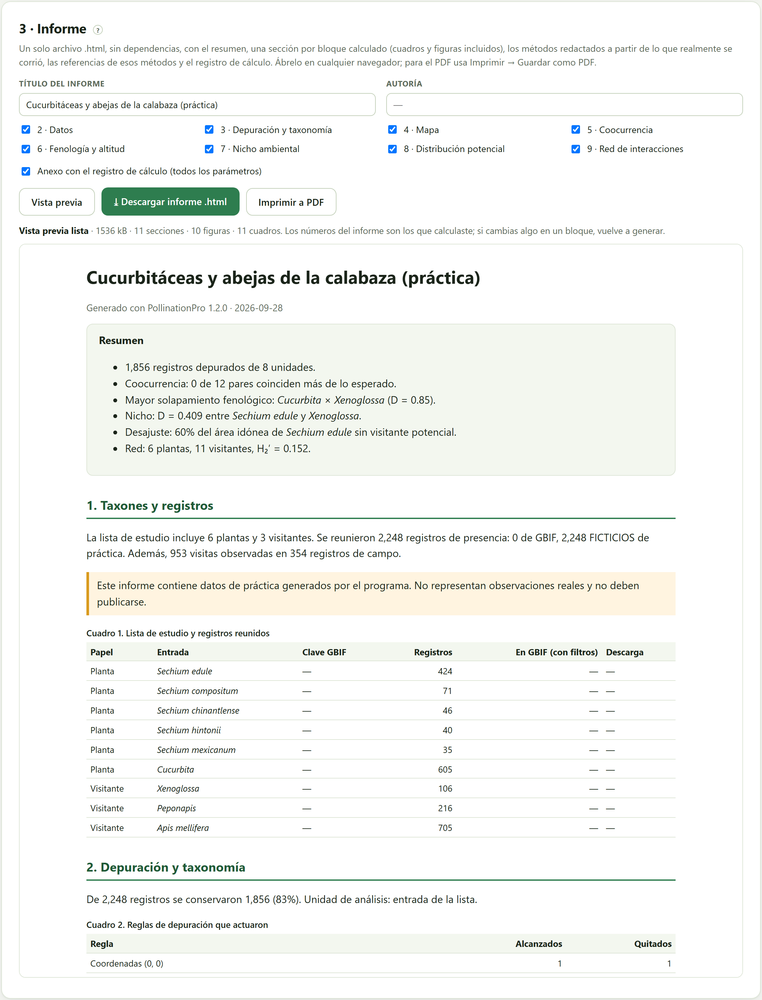
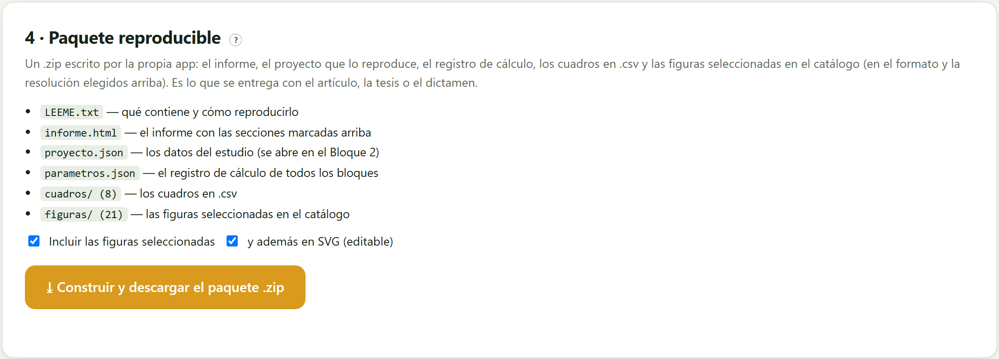

Todo lo que calculaste, listo para salir de la app: cada figura del estudio en PNG, JPG o SVG hasta 900 ppp con el estilo que elijas —el de todas a la vez desde el estudio de figuras, o el de cada una con su editor ✎—; un informe que se abre en cualquier navegador y se imprime a PDF, con los métodos redactados a partir de lo que realmente corriste; y un .zip con el informe, las figuras, los cuadros y el proyecto que lo reproduce.
Un estudio se entrega con tres cosas: las figuras, el texto que dice qué se hizo y los datos que permiten rehacerlo. El Bloque 10 produce las tres a partir de lo que exista en ese momento en los bloques calculados. No recalcula nada: si cambias algo en un bloque, vuelve aquí y genera de nuevo.

Cada bloque aparece como calculado (con el botón Ver) o sin calcular (con Ir). Un bloque se calcula al abrirlo; los que no se abrieron no aparecen en el informe ni en el catálogo, y el mensaje de arriba lo recuerda. Los Bloques 7 y 8 necesitan además capas, y el 9, interacciones.

| Control | Qué hace |
|---|---|
| Formato | PNG, JPG o SVG (vectorial y editable). |
| Resolución | 150 ppp (pantalla), 300 (impresión), 600 (revista) o 900 (cartel). |
| Tema · Fondo | Claro, oscuro o el de la pantalla; fondo según el estilo, blanco, el de la tarjeta o transparente. |
| Con título dentro de la figura | Escribe el título de la figura en el archivo. Para una revista, que pone el título en el pie, desmárcalo. |
| ⤓ Exportar las seleccionadas · Todas las seleccionadas en un .zip | Descarga las marcadas; con más de seis llegan en un .zip, porque el navegador bloquea muchas descargas seguidas. |
Hay dos maneras de cambiar el aspecto de las figuras, y se combinan.

Se abre con el botón de la paleta de la barra superior, desde cualquier bloque. Una sola regla restila todas las figuras de la app, en pantalla y al exportar, sin recalcular nada.
Cada figura de la app tiene, junto al botón ⤓, un botón ✎ que abre su propio editor. Lo que se cambie ahí vale solo para esa figura, se conserva aunque la figura se recalcule y sale en su exportación, en el catálogo, en el informe y en el paquete.

| Pestaña | Qué se edita |
|---|---|
| General | La familia tipográfica, el tamaño de todos los textos (de 0.6 a 2.2 veces), el grosor de las líneas y el tamaño de los puntos (de 0.3 a 3 veces), el color de todos los textos y el de los ejes (con su casilla usar), el fondo y las líneas de la rejilla. |
| Textos | Cada texto de la figura, por su redacción original: se reescribe, cambia de tamaño, se pone en negrita (N) o cursiva (K), cambia de color o se oculta (⦸). Sirve para traducir una etiqueta, acortar un nombre o quitar un rótulo que la revista no quiere. |
| Colores | Cada color que usa la figura, con cuántos elementos lo llevan, para sustituirlo por otro. |

El editor recuerda cada cambio de texto por lo que la figura decía. Si cambias el idioma de la app, los textos son otros y se editan aparte. Y si una figura cambia de contenido —otro par, otra celda—, los textos que ya no existen simplemente no se aplican.

El informe es un solo archivo .html, sin dependencias, que se abre en cualquier navegador. Se le da un título y una autoría, se marcan las secciones —una por bloque calculado— y el anexo con el registro de cálculo. Vista previa lo muestra en la tarjeta; ⤓ Descargar informe .html lo guarda; Imprimir a PDF abre el diálogo de impresión del navegador (Guardar como PDF).
| Parte del informe | Qué contiene |
|---|---|
| Resumen | Una línea por bloque: los registros depurados, los pares que coinciden más de lo esperado, el mayor solapamiento fenológico, la D del nicho, el desajuste y la especialización de la red. |
| Una sección por bloque | Lo que el bloque calculó, en prosa, con sus cuadros y sus figuras (con los cambios del editor ✎ y el estilo del estudio de figuras). |
| Métodos | Redactados a partir de lo que realmente se corrió: las reglas de depuración con sus parámetros, el universo y la celda de la coocurrencia, la corrección por esfuerzo, el fondo y la densidad del nicho, el modelo y el umbral, el modelo nulo de la red. Solo aparece lo que se usó. |
| Referencias | Solo las obras de los métodos usados. |
| Conjuntos de datos de GBIF | Los conjuntos que aportaron registros depurados, porque GBIF pide acreditarlos, y la recomendación de repetir la descarga en su portal para obtener el DOI. |
| Cómo citar y anexo | La cita del programa y, si se marcó, el registro de cálculo con todos los parámetros de todos los bloques. |
Si el estudio usa los datos de práctica, el informe lo advierte al principio; si el nicho o la distribución se calcularon con las capas de práctica, sus secciones lo advierten también. Un informe así sirve para aprender a leerlo, no para entregarlo.

| Archivo | Contenido |
|---|---|
LEEME.txt | Qué contiene el paquete y cómo reproducir el estudio. |
informe.html | El informe con las secciones marcadas. |
proyecto.json | Los datos del estudio: se abre en el Bloque 2 con 📂 Abrir un proyecto. |
parametros.json | El registro de cálculo de todos los bloques: reglas, celdas, universos, fondos, modelos, umbrales, repeticiones. |
cuadros/ | Los cuadros en .csv: registros depurados y quitados, pares de coocurrencia, unidades y pares fenológicos, pares de nicho, evaluación de la distribución, especies de la red y conjuntos de GBIF. |
figuras/ | Las figuras marcadas en el catálogo, en el formato y la resolución elegidos, y además en SVG si se marca y además en SVG (editable). |
El .zip lo escribe la propia app, byte a byte, sin ninguna biblioteca. Es lo que se entrega con el artículo, la tesis o el dictamen: quien lo reciba puede abrir el proyecto, leer los parámetros y rehacer cada número (Sandve et al. 2013; Wilkinson et al. 2016).